AFAM 188: R 4 Mapping in R
Two weeks ago we covered how to work with data in R and produce some plots. Today we will learn how to do mapping in R. Let’s start by using ggplot2 to plot our arrest data by longitude and latitude.
4.1 GGPLOT map
How about we make a map with GGPLOT? We do this by using our longitude and latitude variables as our x and y mapping.
## Parsed with column specification:
## cols(
## latitude = col_double(),
## longitude = col_double(),
## zipcode = col_double(),
## arr_date2 = col_date(format = ""),
## arrest_time = col_time(format = ""),
## age = col_double(),
## sex = col_character(),
## race_cat = col_character(),
## arrest_type = col_character(),
## charge = col_character()
## )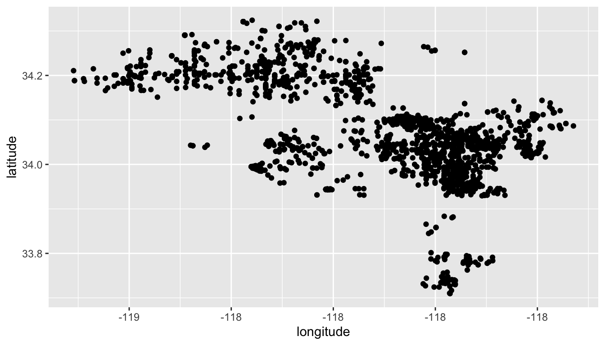
We can see the general shape of LA county, but there are limits to what you can do with geospatial data in ggplot. It doesn’t know what to do with the latitude and longitude beyond adding the points to a plot. It has no sense of the layers we used in QGIS. But other R packages designed for gis & mapping give us these capabilities.
4.2 Mapping in R
We need a way to tell arrests that it is a spatial object in R. To do that we need to use a spatial package called sf to do so. Let’s load it.
How do we load packages in R?
## Linking to GEOS 3.7.2, GDAL 2.4.2, PROJ 5.2.04.3 Converting data to a spatial object
sf stands for simple features and is based on a standard that specifies how to store and work with 2d geometries, points, lines, polygons, etc..
Ok, first up, let’s convert our arrests data to a simple feature object, so it knows it contains spatial information. We need to do this b/c tmap will need this information so we map it. To store this object, I’ll create a new data frame called arrests_sf and use the st_as_sf() that lets us convert our data frame to a sf object using the latitude and longitude. Let’s look up this funtion in the R help system first.
Many of these conversion functions in the sf package start with st - this is because PostGis, a heavily used GIS database uses ST (spatial type) for many of its functions.
Ok, let’s now convert our arrests data to a sf object.
Notice a couple of things you haven’t seen before. We have a coords argument that we use a c() function to combine our latitude and longitude columns. We also tell the function what Cordinate Refernce System be are using 4326 is a common one.
Let’s look at this new spatial data frame:
We now have a column called geometry at the end of our data frame. This contains our latitude and longitude.
One thing nice is that we can use the plot() function that is part of sf package to plot our spatial data frame as it is.
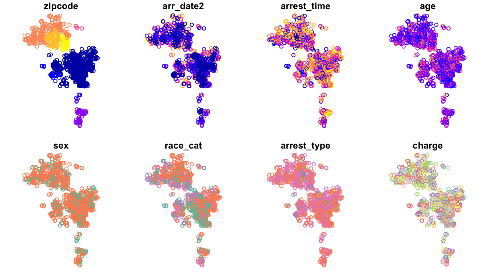
But the problem is that we still have no context for our points. We need the layers of polygons we had in QGIS to let us know this is LA. Let’s look at this in a package called tmaps (thematic maps).
What do we need to do before we use a package in R?
## tmap mode set to plottingtmap let’s us plot maps like ggplot above – we’ll learn to add different layers to the map, this will be a code way of doing what we did in QGIS.

4.4 Reading in shapefiles
Nice, but again, we lack geographic boundaries and other shapes. Just like in QGIS, however, we can read in various shapefiles – the ones ending in .shp – to provide our map some boundaries. We do this by using the function st_read. Let’s look at our help documentation on st_read.
Inside our data/ folder we have the shape files we used in our QGIS part of the class plus a new one on the LA county boundaries. Let’s read them in individually and note the output in the console, especially the geometry type.
#geometry type: MULTILINESTRING
la_county <- st_read(dsn ="data/DRP_COUNTY_BOUNDARY/DRP_COUNTY_BOUNDARY.shp")## Reading layer `DRP_COUNTY_BOUNDARY' from data source `/Users/timdennis/instruction/afam188/afam188-r/data/DRP_COUNTY_BOUNDARY/DRP_COUNTY_BOUNDARY.shp' using driver `ESRI Shapefile'
## Simple feature collection with 2 features and 2 fields
## geometry type: MULTILINESTRING
## dimension: XY
## bbox: xmin: 6280000 ymin: 1380000 xmax: 6670000 ymax: 2120000
## epsg (SRID): 2229
## proj4string: +proj=lcc +lat_1=35.46666666666667 +lat_2=34.03333333333333 +lat_0=33.5 +lon_0=-118 +x_0=2000000.0001016 +y_0=500000.0001016001 +ellps=GRS80 +towgs84=0,0,0,0,0,0,0 +units=us-ft +no_defs## Reading layer `CAMS_ZIPCODE_STREET_SPECIFIC' from data source `/Users/timdennis/instruction/afam188/afam188-r/data/CAMS_ZIPCODE_STREET_SPECIFIC/CAMS_ZIPCODE_STREET_SPECIFIC.shp' using driver `ESRI Shapefile'
## Simple feature collection with 358 features and 10 fields
## geometry type: POLYGON
## dimension: XY
## bbox: xmin: 6280000 ymin: 1380000 xmax: 6670000 ymax: 2120000
## epsg (SRID): 2229
## proj4string: +proj=lcc +lat_1=35.46666666666667 +lat_2=34.03333333333333 +lat_0=33.5 +lon_0=-118 +x_0=2000000.0001016 +y_0=500000.0001016001 +ellps=GRS80 +towgs84=0,0,0,0,0,0,0 +units=us-ft +no_defs#geometry type: MULTIPOLYGON
la_zips <- st_read(dsn = "data/Los_Angeles_City_Zip_Codes/Los_Angeles_City_Zip_Codes.shp")## Reading layer `Los_Angeles_City_Zip_Codes' from data source `/Users/timdennis/instruction/afam188/afam188-r/data/Los_Angeles_City_Zip_Codes/Los_Angeles_City_Zip_Codes.shp' using driver `ESRI Shapefile'
## Simple feature collection with 157 features and 7 fields
## geometry type: MULTIPOLYGON
## dimension: XY
## bbox: xmin: -119 ymin: 33.7 xmax: -118 ymax: 34.3
## epsg (SRID): 4326
## proj4string: +proj=longlat +datum=WGS84 +no_defs#geometry type: MULTILINESTRING
la_freeways <- st_read(dsn ="data/CAMS_FREEWAY_SHIELDS/CAMS_FREEWAY_SHIELDS.shp")## Reading layer `CAMS_FREEWAY_SHIELDS' from data source `/Users/timdennis/instruction/afam188/afam188-r/data/CAMS_FREEWAY_SHIELDS/CAMS_FREEWAY_SHIELDS.shp' using driver `ESRI Shapefile'
## Simple feature collection with 45 features and 4 fields
## geometry type: MULTILINESTRING
## dimension: XY
## bbox: xmin: 6280000 ymin: 1720000 xmax: 6670000 ymax: 2120000
## epsg (SRID): 2229
## proj4string: +proj=lcc +lat_1=35.46666666666667 +lat_2=34.03333333333333 +lat_0=33.5 +lon_0=-118 +x_0=2000000.0001016 +y_0=500000.0001016001 +ellps=GRS80 +towgs84=0,0,0,0,0,0,0 +units=us-ft +no_defsNow let’s use the layers. The important thing is we match our shapefile with the geometry type. tm_polygons() & tm_borders goes with #geometry type: MULTIPOLYGON and tm_line() goes with #geometry type: MULTILINESTRING. Let’s use this new knowledge to make the map better.
## tmap mode set to plottingWe are going to build this up, let’s start with our points like above.
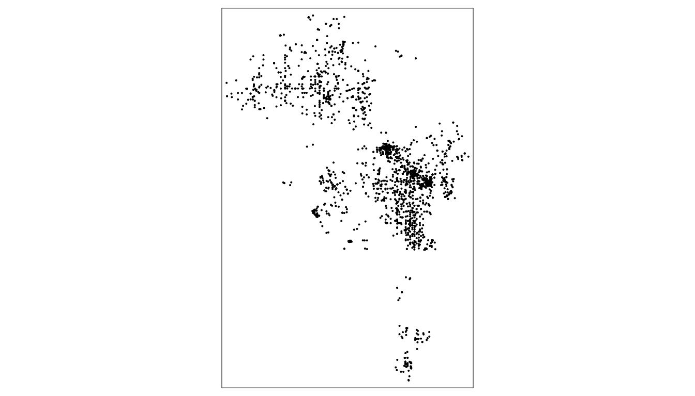
Now, if the tmap function that made our arrests data points on the plot is tm_dots(), what do you think the function is for making the zipcode boundaries. What shape are they?
tmap gives a number of functions that lets us determine how we want to map objects. You start with tm_shape and that’s the function that takes in the data you want to map. Then you tell tmap how to map it via functions like tm_fill, tm_polygons, tm_borders, tm_lines, tm_dots & tm_bubbles. There are many more. Which one you use is dependent on what types of shapes you want to create.
Let’s use our zipcode shapes.
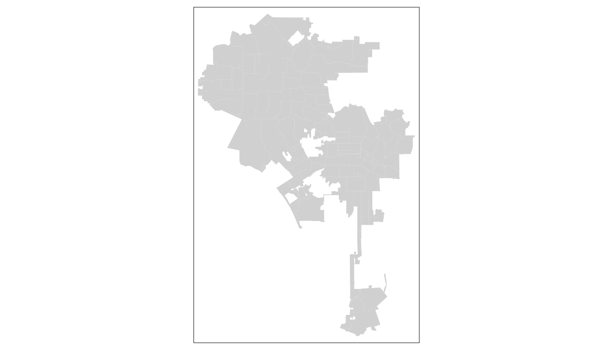
Note the output indicates the shape is invalid. This can be for various reasons, but an easy remedy is use the st_make_valid() in the lwgeom package. Run the below code. Paste in the etherpad.
tm_fill fills our polygons in zipcodes. Let’s see what happens if we use tm_polygons instead and add our arrests data as tm_dots. Note, we use the plus sign to add layers.
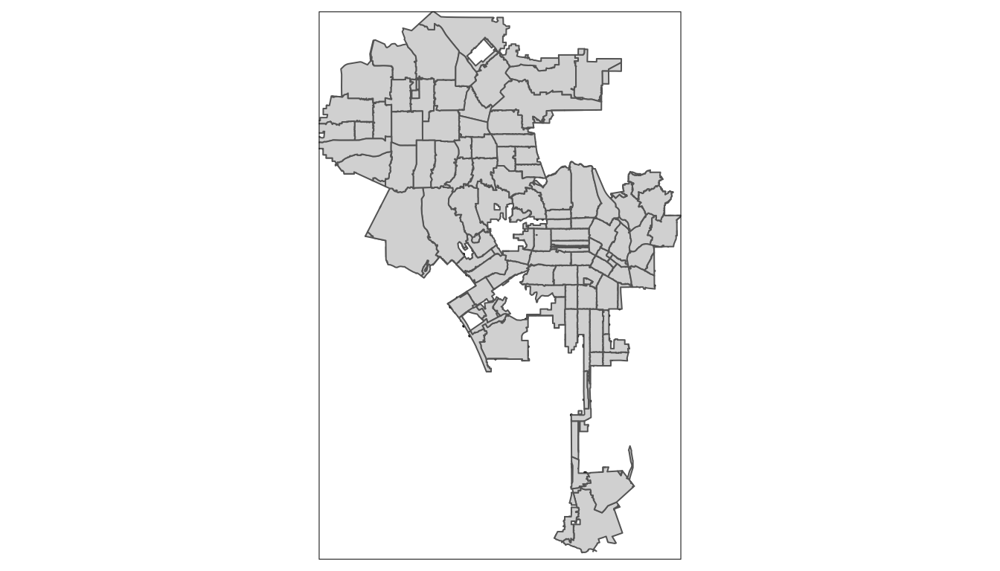
Where are our points? Why don’t they show? What do you think?
Yes, they are hidden underneath our zipcodes! WE can reorder the code and they’ll appear, but we can also add transparency to our tm_polygons function. Does anyone remember what we called this in QGIS?
Right, alpha is the term for adding transparency in plotting and graphing across many software tools, tmap is no diff. Let’s add a transparency.
tm_shape(arrests_sf) +
tm_dots() +
tm_shape(la_zips_st) +
tm_polygons(alpha = 0.5) #a value from 0 to 1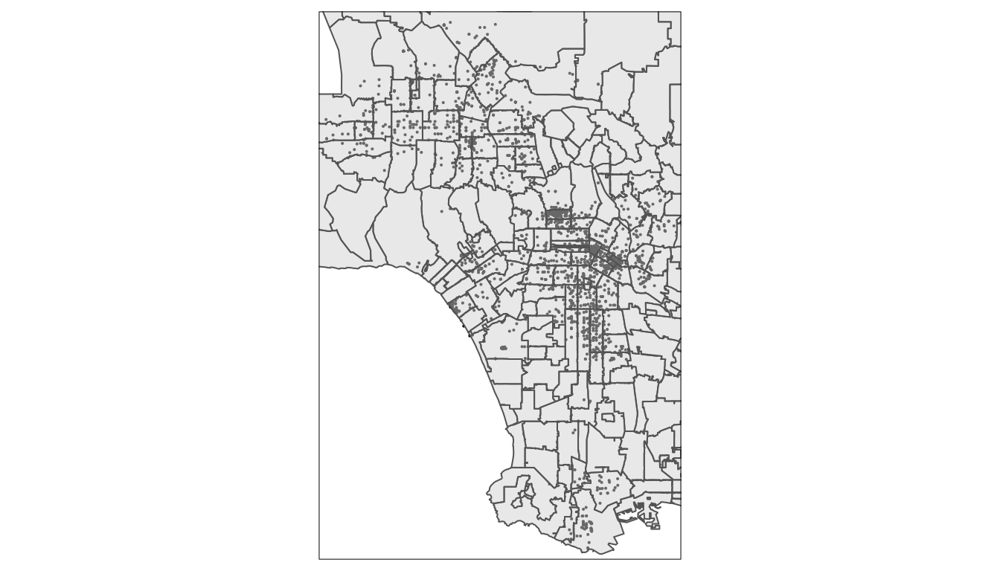
Ok, now I want you to add another layer. Add either la_county boundary (a polygon) or la_freeways to the graph. Take 5min.
tm_shape(la_zips) +
tm_polygons() +
tm_shape(la_freeways) +
tm_lines() +
tm_shape(arrests_sf) +
tm_dots() 
Ok, what we’ve done so far.
- We’ve taken a dataset that has latitude and longitude data in it and converted it to a simple feature object in R.
- We’ve read in shapefiles into R as simple feature objects that become mappable.
- We’ve layered them on a plot using
tmapand even added some transparency to our polygon layer.
Good job!
4.5 Aesthetics
So far, we’ve accepted tmap’s default aesthetic settings, like the grey color fill for tm_polygons. However, we can alter this with arguments in our tm_ function.
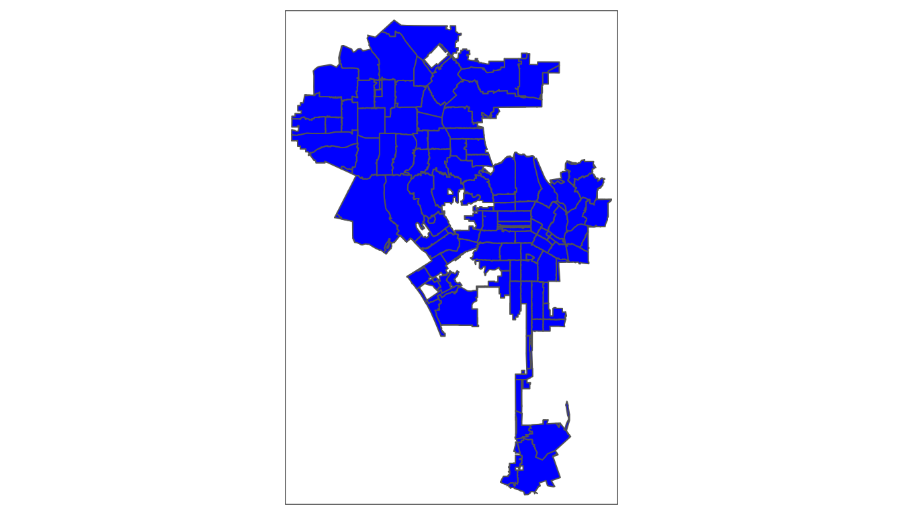
Let’s add an alpha:
tm_shape(la_zips) +
tm_polygons(col='blue', alpha = 0.5) +
tm_shape(arrests_sf) +
tm_bubbles(size = 0.09, col="gold", alpha = 0.4)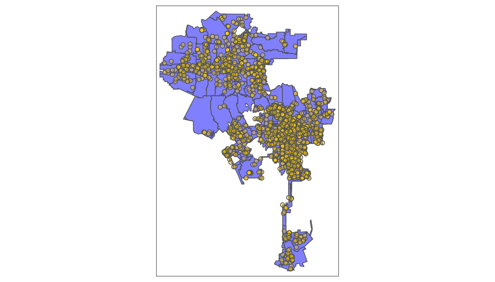
Instead of tm_polygons there’s another function that matches our shapes better. It’s tm_borders. Let’s swap it out for tm_polygons:
tm_shape(la_zips) +
tm_fill(col='blue', title="LA Zipcodes", alpha = 0.5) +
tm_borders() +
tm_shape(arrests_sf) +
tm_dots() +
tm_compass(type = "4star", position = c("left", "top"), size = 2) 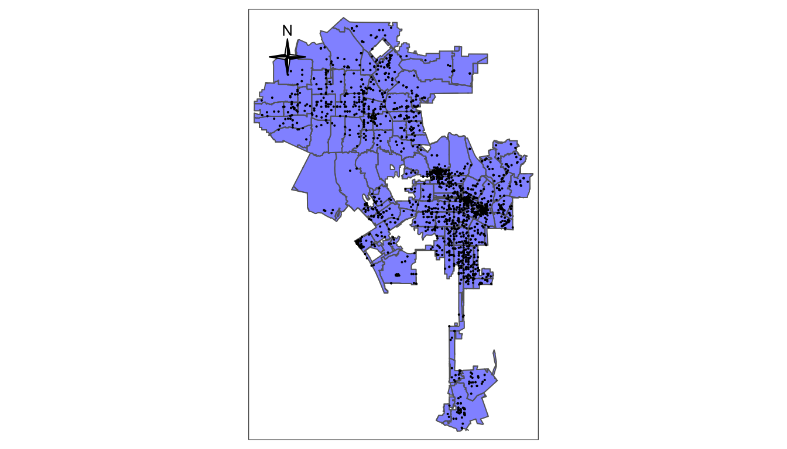
4.6 Saving map objects
We can also save a tmap as an object in R and reuse it or build on it. For instance:
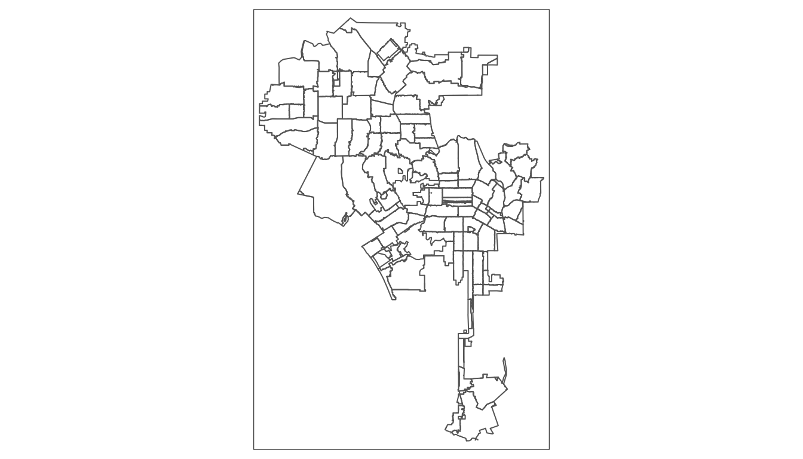
We can now build off of lazips and then use different versions of the map.
lazips <- tm_shape(la_zips)
lzip1 <- lazips + tm_fill(col = "red")
lzip2 <- lazips + tm_fill(col = "red", alpha = 0.3)
lzip3 <- lazips + tm_borders(col = "blue")
lzip4 <- lazips + tm_borders(lwd = 3)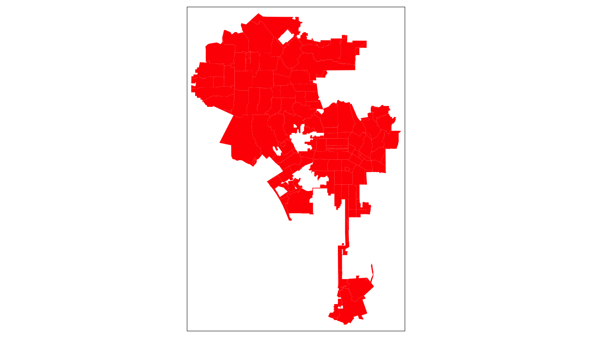
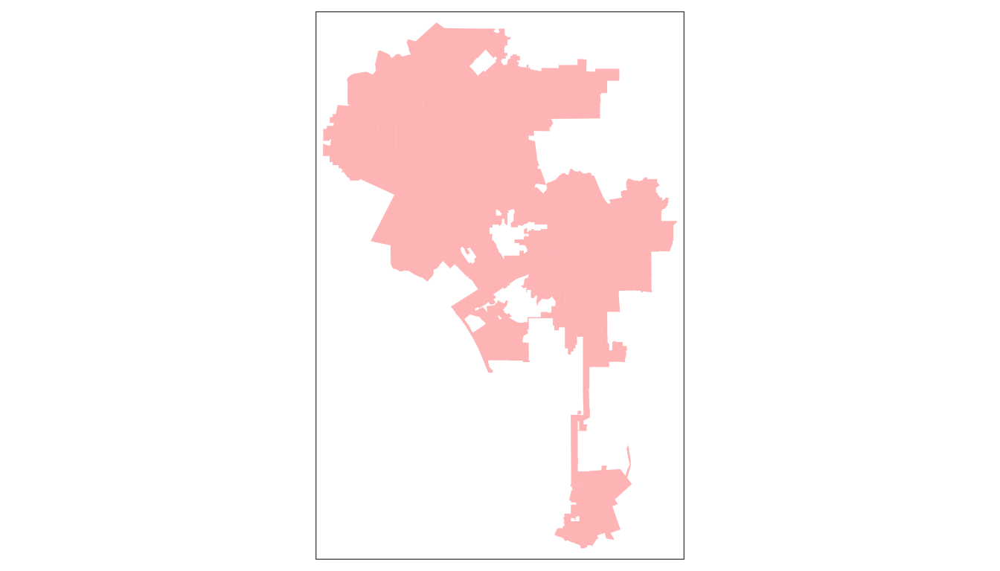
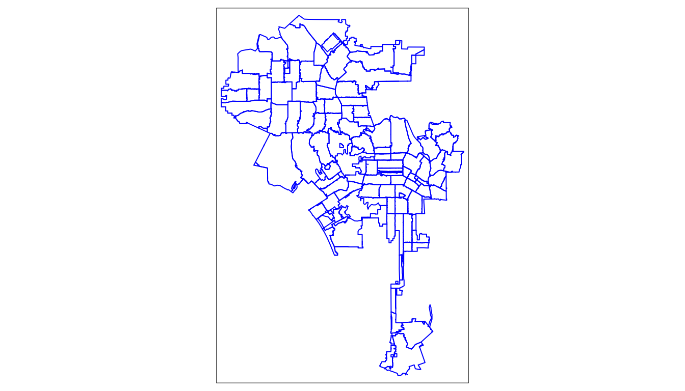
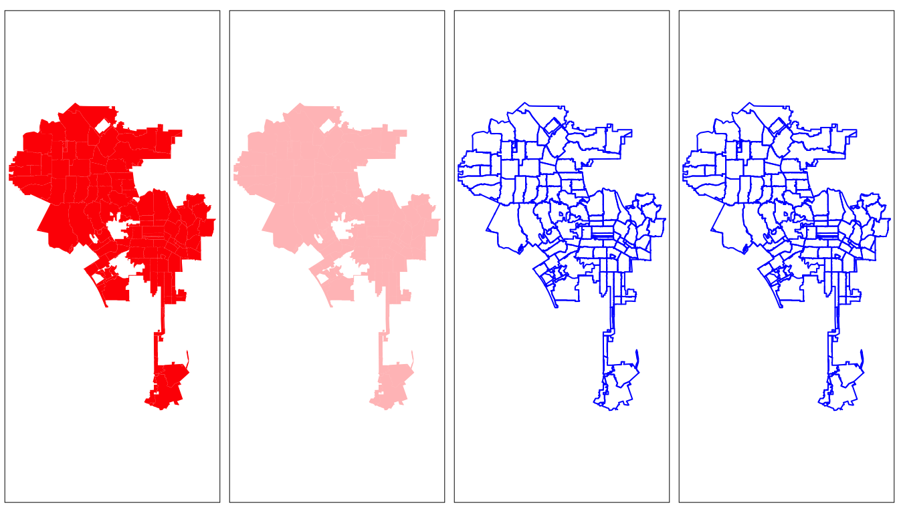
tmap is very flexible and granular. We can control all aspects of the map and as we move along we can show more
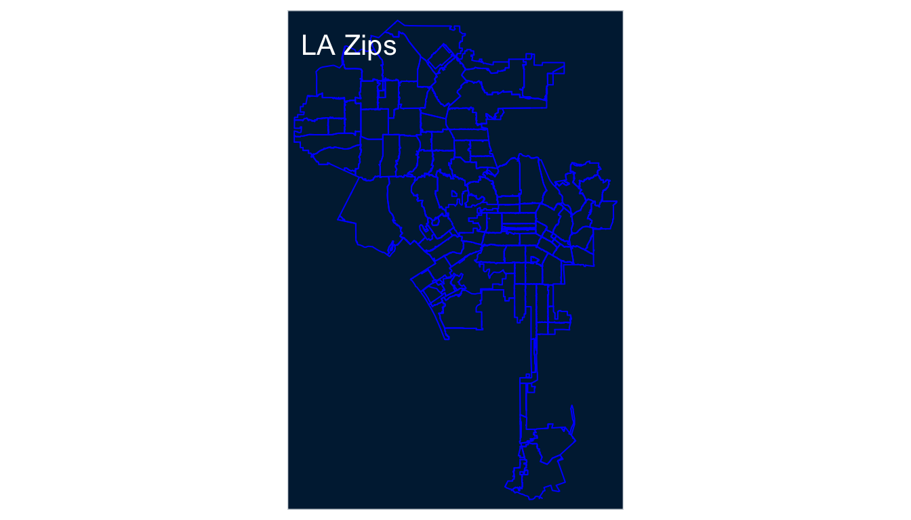
4.7 Interactive Maps
So far, we’ve been using tmap to produce a static map, but tmap lets us create interactive maps by switching it’s mode to `view’. We can do this using a single line.
## tmap mode set to interactive viewingtm <- tm_shape(la_zips) +
tm_polygons() +
tm_shape(la_freeways) +
tm_lines() +
tm_shape(arrests_sf) +
tm_dots()
tmap_save(tm, filename = "world_map.html")## Interactive map saved to /Users/timdennis/instruction/afam188/afam188-r/world_map.html